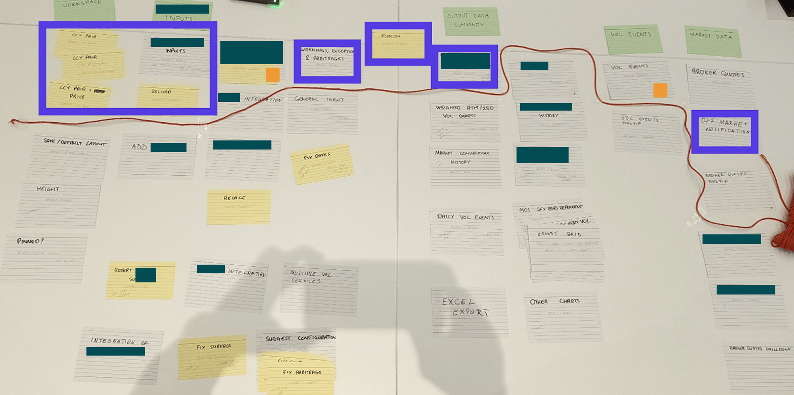
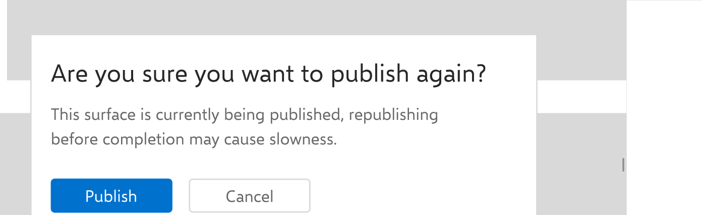
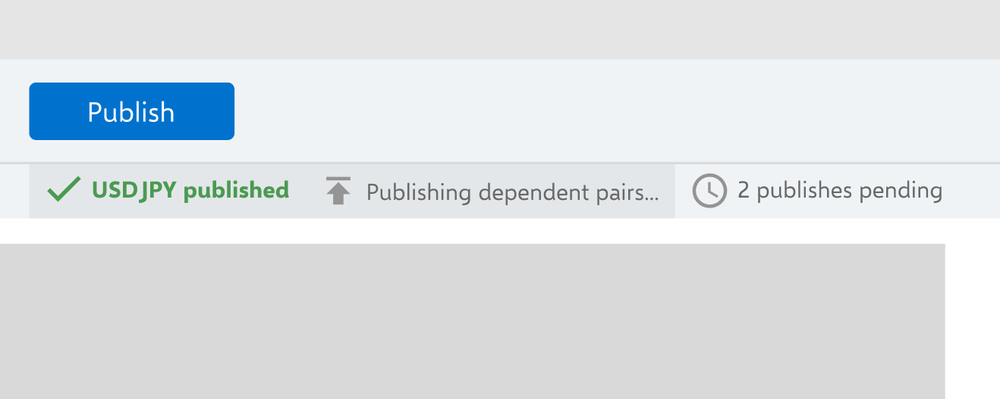
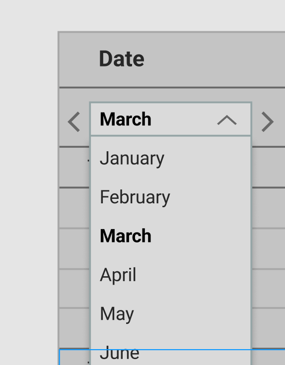
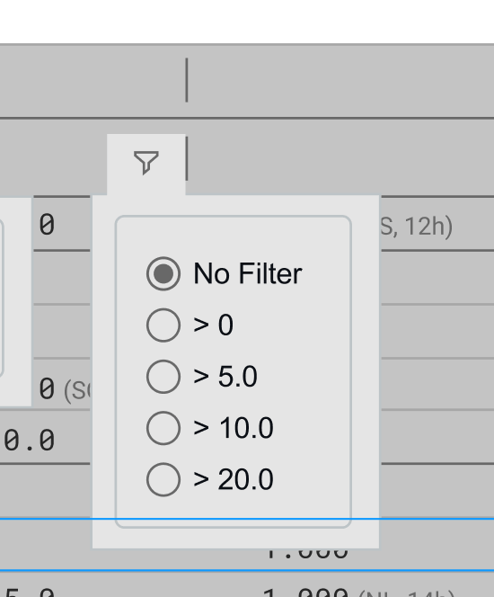
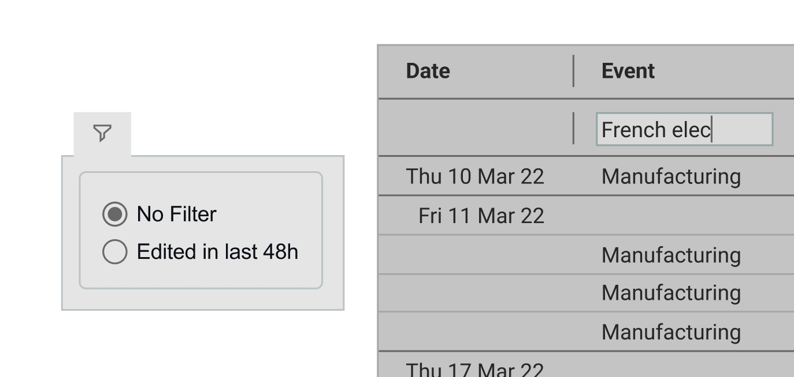
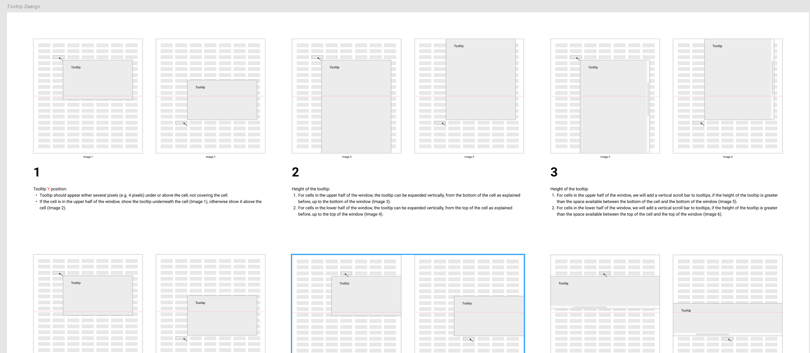
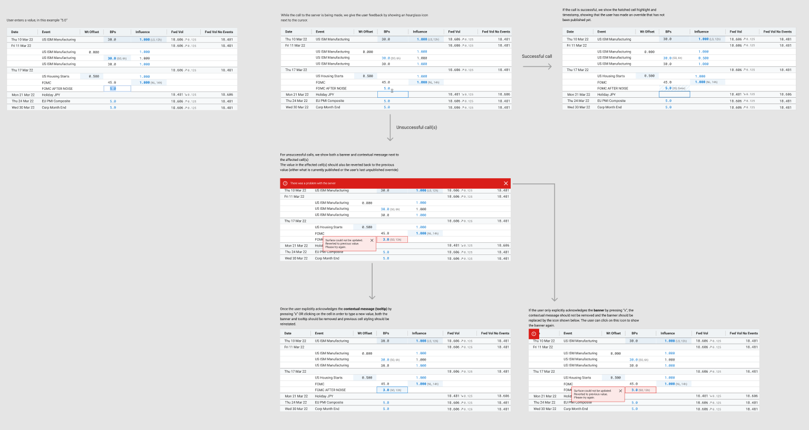
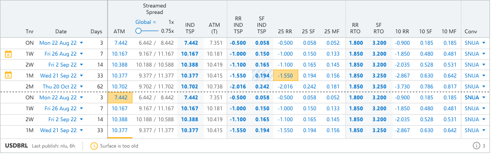

Context
This client was experiencing increasing difficulty when it came to maintaining its primary FX pricing tool. Built with aging tech, the tool had grown organically over the years and was now struggling to meet the competing needs of its global user base. The client didn't have a clear vision for what they needed from a new system, but they knew that they needed a robust alternative that would empower their traders to drive daily business value.
The client had three core objectives for the engagement:
- Deliver a modern application that supports the needs of users now and into the future
- Decommission the existing platform
- Carry out a seamless migration from old to new without any impact on BAU
Initial Discovery
The initial client ask was relatively vague, and included loose and conflicting system requirements like "intuitive" and "feature rich". It was therefore decided that a small team of consultants, including my UX colleague and I, would carry out a 6 week discovery, with the following objectives:
- Identify the problem and its complexities — look for opportunities to improve or innovate
- Understand the user — capture user needs and goals
- Shared team vision — align the team around issues and direction
Understanding Our Key Stakeholders
Our first priority was to seek clarity and alignment around common goals and priorities for the project. We did this primarily through a handful of in-person sessions with senior stakeholders like Trading Floor Managers, Quants and technical Subject Matter Experts. These sessions also helped us get to grips with the domain, which would help equip us for early user sessions.
.png)
Our Miro board where we collated notes and findings from stakeholder sessions. Virtual whiteboarding helped the UX team collaborate, as we could compare and discuss our findings in one place.

An epic mapping workshop run by our Principal Architect, which helped my UX colleague and I understand the existing features and their relative importance and complexity from the business' point of view.
User Research
I planned and carried out various user research methods on this project, starting with user interviews and shadowing sessions on the client's London trading floor. Observing users in context provided insights we simply wouldn't have discovered otherwise. It also helped us build a strong relationship with the users, who would later advocate for our design opinions in stakeholder meetings. This gave us a lot more clout when liaising with the business, and on one occasion helped persuade the project sponsor to prioritise enhancements to the app's event list feature.
During our initial user sessions, we also listened carefully for any inconsistencies between stakeholder opinions and user reality — information we could later use to steer the team towards a comprehensive and aligned view of the problem.
Stakeholder opinion:
“It takes about half an hour for new starters to work out how to use the system.”
User opinion:
“It took me 2 weeks before I felt like I knew my way around it. There's no training, you just have to copy what other people are doing and work out your own process.”
Synthesising Research Findings
We covered a variety of user groups located in different offices with our research, supplementing our in-person trips to the London office with remote interviews. We found that we could cover a lot of ground by analysing the G10 Trader workflow first, as their core tasks covered around 80% of user workflows. We started mapping out and analysing what we'd noted in the form of journey maps and flow diagrams.

A more suitable framework for modelling complex insights
It soon became apparent that traditional UX synthesis methods like journey mapping did not fully capture the complexity of trader workflows. These workflows were fundamentally nonlinear, with no defined "happy path" for users to follow.
We decided to apply Nielsen Norman Group's 5 Layers of Complexity framework as a complementary problem solving lens. Applying a structured approach like this helped us break these concepts down into more manageable chunks for stakeholders. For the sake of scope and political sensitivity, we excluded the "Institution" layer from our direct analysis, but it was still an important factor for the design team to consider.
Environment
Collaboration, interruptions, distractions, and breaks in workflow
- Global user base with multiple users able to edit simultaneously but not collaboratively, leading to overwrites
- In edit mode, new events pop up that are relevant to what the user is doing but break focus
- User attention is at a premium - multiple screens, alerts, loud voice broker conversations all compete for the user's attention
- Users need to know how changes will affect the curve and other curves — which changes are their edits and which are published
Intention
Supporting unstructured goals, broad tasks, and decision-making
- Users need to see what would be different if they accept an auto-publish, compared to the changes they have made in edit mode
- P&L exposure when marking the curve — currently users need to work back and undo changes to see what caused P&L to go down, which is dangerous if you undo the correct thing
Information
Data volume; presentation and analysis of large data sets
- System grown organically which has led to inconsistency in information delivery systems
- Lack of a cohesive visual language and notification system creating significant risk of banner blindness and error-making
- Users can customise colours of their messages which conflicts with error states
Integration
Complex back-end architecture; legacy of underlying systems
- System fails to publish creating significant risk of error, confusion and financial loss
- Loss of edits delays task completion and creates rework
- Manual process to mark risk reversal and butterfly
Moving into the build phase
By the end of the 6 week discovery, the team had collated and synthesised a range of insights from both user and technical perspectives, allowing us to form a full picture of the problem space.
My research activities played a key role in helping shape a high level roadmap for the coming months, along with an initial backlog. To summarise, these are the areas we deemed to be in and out of scope for the upcoming phases of the project:
In Scope
- Take a task-based approach, presenting functionality only as and when it is relevant to the user
- Implement scalable, modular components that can be remixed into bespoke workflows
- Reformat information hierarchy, distinguishing between primary and secondary information
- Move towards a standardised feedback and notification system
Out of Scope
- Backend processes like model interaction or changes
- Publishing delays and slow calculations — this slowness has a huge impact on the user experience, and this constraint limited the improvements we could make
Applying what we'd discovered
With backend processes deemed too costly and time-intensive to unpick, I took on a key role within the overall delivery — using Design to do the heavy lifting and patch over some of the areas where the backend mess was holding users back. One key example of that was one of the core causes of system slowness: publishing.
Our understanding of the publishing problem was twofold. From the architecture side, we knew that publishing was a major cause of slowness — because lots of users were all maintaining the same set of data, publishes could queue up and bog the system down. From the Design side, I'd observed that users got no feedback when they pressed publish. They couldn't tell whether it had succeeded, failed, or was just slow, so they would try to republish. This created a vicious cycle: repeated publishes added to the queue behind the scenes, slowing the system even further.

A confirmation dialog to warn users that republishing before the current publish completes may cause slowness.

A status queue to give users real-time feedback on publish progress, aiming to give users confidence that the quickest way to keep up with the market is to wait.
I was able to produce simple Design solutions that tackled a key user problem through strategically placed friction and feedback, without us having to do the grunt work of untangling the underlying systems.
There's a big premium for clarity, anything that adds 5 seconds here or 10 seconds there all adds up. There are days where I don't have 30 seconds to rub together.
What feature requests don't capture
One of the core reasons this project was needed in the first place was because discrete and uncoordinated feature requests had caused the tool to grow over time, to an unmanageable point.
Good Design and Product work needs to consider the underlying need behind individual feature requests, and acts as a filter that ensures any changes interact well with the wider ecosystem.
With expert users often operating on autopilot, workarounds can become invisible to them. I found this to be the case in my research, where I noticed a user excessively scrolling when trying to locate event data. The user hadn't voiced this as a frustration, but once I enquired, I found that it was a common problem that saps unnecessary time and energy away from the Traders.
The alternative: scenarios driving solutions
Evidence about user workflows helped me keep my solutions laser focused on value. The clarity this brought can be seen in my event list design work:
Context
World events affect volatility and pricing, so finding and editing event data to calculate its impact on prices is a common user task.
Problem
Inefficient process for finding and editing means traders can't react quickly to fast-moving markets.
Consequences
Poorly marked prices increase the risk of bad deals for our client.
Scenario 1: Finding events within a rough date range
User knows: the general date range they're interested in.
Interested in: highest impact events - "when I'm pricing stuff I need to get the info quickly and get it right, this is noise"


A date-range dropdown lets users quickly narrow down to the period they care about. The instinctive solution for locating items within a time range might be a date range filter, but the way event data was structured meant that it wasn't always clear which dates would be relevant. Having the flexibility to jump to different time ranges without removing dates from the dataset was a less risky alternative.
Combining this with a filter for the most impactful events allows the user to remove excess noise from the view, without the risk of missing important information.
Scenario 2: Checking recently edited events
User knows: name of event, often who updated it, impact numbers they may need to match manually.
Interested in: recently updated event data, specific event identifiers.

Exploration into options that facilitate quick, low effort location of specific events. Our project sponsor particularly liked the 'recently edited' suggestion.
The tradeoffs of a phased migration
Benefits
- Traders continue BAU without major disruption
- Reduced risk of users not opting in or struggling to adapt to the new system
- Team able to embed iterative testing practices
Constraints
- Limited screen real estate within embedded containers
- No global notification system spanning old and new layers
- Inconsistent user experience in the interim
The project followed an incremental delivery strategy. Rather than replacing the legacy platform in one go, we drip-fed individual pieces of new functionality into WebView2 containers embedded within the existing interface. While this strategy would allow for a smoother transition towards a standalone solution, it provided a tricky environment to design for in the interim. Here are some examples of design decisions we made to compensate for the challenges our delivery strategy brought:
Designing for the containers

Screen real estate was tight due to functionality being cased inside individual containers. This, combined with a user need to be able to compare numbers from different grid columns, meant that we had to go in-depth on defining tooltip interaction patterns with the Developers.
Feedback in the absence of a global notification system
Designs had to communicate emerging alerts and errors that were often generated by the system rather than the user. These would often relate to specific cells within contained grids, which made notifying the user difficult.


Reflection
This project offered a range of challenges, from discovery right through to MVP build and future enhancements. I think that having a client that bought in to our User Centred Design approach was essential for its success, as the domain and workflows were complex and demanded sensible decision making.
If I could approach this project again, I would push to involve a wider pool of users earlier in the process. Our research was at times reliant on a small group of willing participants. Not only could this have skewed decision making towards individual preference, it was also trickier to recruit research participants when our core group became too busy.